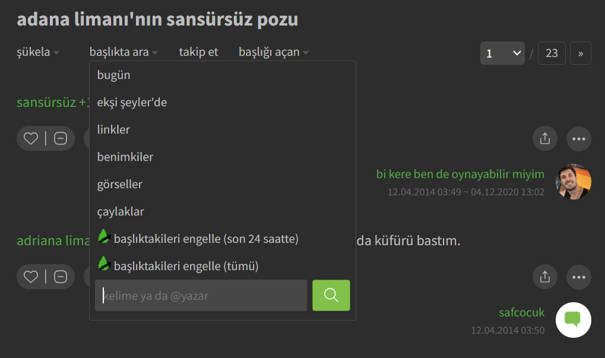

Ekşi Sözlük üzerinden
Eklenen seçeneklere entry, yazar ve başlık menülerinden doğrudan ulaşın.




Versiyon notları için tıklayın
Çok fazla yazarı takip ediyorsanız bu seçenek işlemin uzun sürmesine neden olabilir.
Çok fazla yazarı engellediyseniz bu seçenek işlemin uzun sürmesine neden olabilir.


Ekşi Engel'i site üzerinden veya eklenti menüsünden iki farklı şekilde kullanabilirsiniz.
Eklenen seçeneklere entry, yazar ve başlık menülerinden doğrudan ulaşın.

Eklenti menüsünden iki farklı toplu işlem başlatabilirsiniz.
Eklenti simgesine tıklayın ve Gireceğim Listedeki Yazarları Engelle / Engelini Kaldır seçeneğini açın.
Listeyi metin alanına yapıştırın; ardından Engelle veya Engeli Kaldır seçeneğini kullanın.
Eklenti simgesine tıklayın ve Tüm Engellerimi Kaldır seçeneğini kullanın.
Bu işlem, yalnızca Ekşi Engel ile engellenen yazarların değil, engellenmiş tüm yazarların engelini kaldırır.